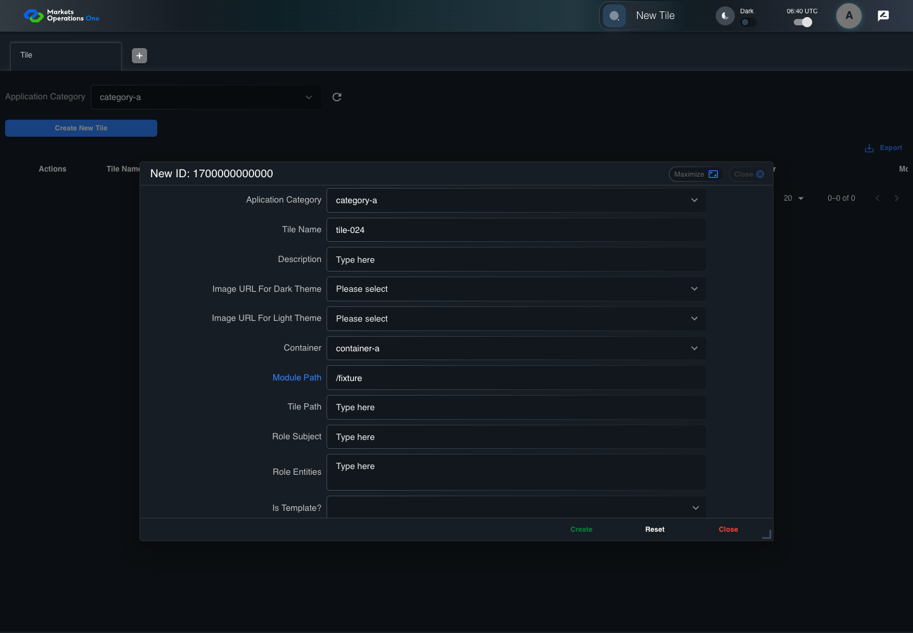
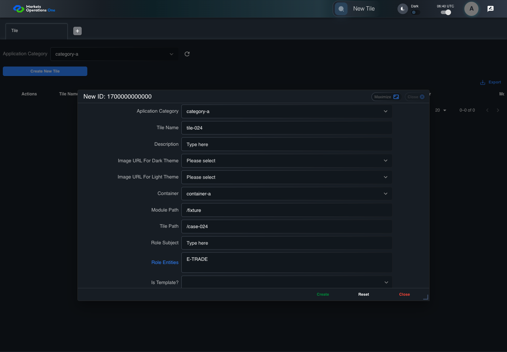

BFF-ADM-024 current BFF administration through actual UI
PASS · application/run-072/bff-adm-024-current-bff-administration-through-actual-ui-78c879fff6df-attempt-1 · ACTUAL_APPLICATION_LOCAL_SERVICES
Actual current React and exact-current BFF admin controllers/services/JPA with actual migration DDL in disposable PostgreSQL. Controlled OUD/EMS2 identities and local Spring bootstrap. Fixture SQL seeds/mutates isolated records; service errors are actual database errors. Undefined agreed messages remain unresolved acceptance.
2026-10-22T06:40:54.942Z to 2026-10-22T06:41:06.622Z
Assertions and result · Artifact manifest · Exact run inputs and source hashes
Result SHA-256:e3df4019bc4373c78436051fc5303705c95ff2142c59af6ddf00742c566c2a98Machine observations
- actual-identity-projection.json
40145b227bb71b85af721fbaffc2426d6c594e4a364a670e0ac13506cf0a33d4 - baseline-inputs.json
a13e78b3f4e7bf6db573da1ef2df0597692ccae821ffd716c2654073d29c5476 - bff-boundary.json
3e0a9b751196ac73a79e98401db1ce1b8054c6a5cad9e874b4954116ff72bd3f - committed-ui-submission-comparisons.json
2e4f8dbdea15afe4251baa4960aac1009c622a60d687db87d32f31be7f1b99cc - creation-clock.json
cd89246d8372864ae71caf87b6e689f2d6e67d3c75fa2fee468d5f3702fdd66e - fixture-step-10.json
ef16efd8b2a767dafa511d9db9b90cb28b5733573f0c98c9212566a2402964c2 - fixture-step-11.json
2ecb8cfe0ff7fa82623c2f5c1d2c6af975279808fc218fbfe2d266685af6eafa - fixture-step-6.json
ea40fa23e3a234a371eb8f39402c5aff5f8f9268e8c208148f15215422979b56 - fixture-step-7.json
8b5d7ef70b859700942caafc3749376b2d77968ebbbf2cd44a9e58f2d0e66991 - fixture-step-8.json
9d6a2fae6198d8dab8d29f56154489333840d244cdac0c30291abfd1d57ba42b - fixture-step-9.json
b85929f9ffd24ebf0c2eef3526cad6bf7c9100de9e14e14cf3a8a010b3c25b51 - initial-persisted-records.json
83adeb2732fca2d66e1f053fd0c1d964ec72034dbffdb98815eb63358bcea907 - persisted-after-submit.json
507b44302b06ad076830ea6bb8ca9e13fcd22cd33d622170fe0d0c156e0e22e3 - reference-snapshot-3.json
4c515ca91b4987508cd2c8d5d0266726a3de06c965f468a6207e54b3833a937b - reference-snapshot-4.json
9509ddefd9f3802fa12e09f7358e3ef01fe534eb84ad5f5a749b1fedd7f72549 - rejection-or-policy-observation.json
58cfac9b824f705438fd622f975046b6f7369df66b55fb8ac5f59d9dc1b2a757 - ui-origin-bff-requests.json
0be7715cdabafac134ea9c9db3bc44ca99e75797aea8da4c82f5639be6b1396d - undefined-message-contract.json
6a120afc57e9eee2e83d3ef25e27956ab5112efee7ed3b8b71cdd6ba2331cc2f
Screenshot capture: CAPTURED. Named frames: 25.
Step screenshot bindings: COMPLETE. 24/24 canonical steps have execution screenshots.
Bindings measure structural coverage only. They do not establish screenshot content quality or relevance.
Screenshot content review: NOT_REVIEWED. Recorded context: 0/25 frames. Identical image bytes: 0 repeated frames. Recorded context does not establish human visual review.
Canonical step timeline
Given Admin A uses subject "admin-a" with role "FMO_ADMIN" in an isolated authenticated browser
Execution: PASSED.
1. step-01 Visible state after step 1: Given Admin A uses subject "admin-a" with role "FMO_ADMIN" in an isolated authenticated browser
2026-10-22T06:40:58.533Z · 1440×1000
Step: /Users/lushevol/code/github/ratan-release-impact/workbench/tasks/ui-test-coverage-20261022/test-cases.md:15684
SHA-256:ec4d62b93d2f99420ef94e118ee21625dc7e03679011cda5cab66333492ee25eAnd the controlled Tile fixture records the initial grid rows and persisted values
Execution: PASSED.
2. step-02 Visible state after step 2: And the controlled Tile fixture records the initial grid rows and persisted values
2026-10-22T06:40:58.744Z · 1440×1000
Step: /Users/lushevol/code/github/ratan-release-impact/workbench/tasks/ui-test-coverage-20261022/test-cases.md:15685
SHA-256:747f1f3a55141956f62fdd96d3835012ac77e5380c856a0459aaa45816a45393And Category 101 has label "category-a" and Import Map 201 has Module Name "container-a"
Execution: PASSED.
3. step-03 Visible state after step 3: And Category 101 has label "category-a" and Import Map 201 has Module Name "container-a"
2026-10-22T06:40:58.836Z · 1440×1000
Step: /Users/lushevol/code/github/ratan-release-impact/workbench/tasks/ui-test-coverage-20261022/test-cases.md:15686
SHA-256:f6fbe917cb124cef8699cb85549ecb86ac9efcee572c12a8995298e65a7200aeAnd both references belong to "FMO_ADMIN" and the Tile page category filter value is Category 101
Execution: PASSED.
4. step-04 Visible state after step 4: And both references belong to "FMO_ADMIN" and the Tile page category filter value is Category 101
2026-10-22T06:40:58.992Z · 1440×1000
Step: /Users/lushevol/code/github/ratan-release-impact/workbench/tasks/ui-test-coverage-20261022/test-cases.md:15687
SHA-256:bff2fbbb8991f1809a0dc491436c1c3b9b6bf5bb09156bb382105182dcbfe3deAnd the controlled creation clock returns 1700000000000 milliseconds
Execution: PASSED.
5. step-05 Visible state after step 5: And the controlled creation clock returns 1700000000000 milliseconds
2026-10-22T06:40:59.071Z · 1440×1000
Step: /Users/lushevol/code/github/ratan-release-impact/workbench/tasks/ui-test-coverage-20261022/test-cases.md:15688
SHA-256:aeccd798f7b1c74721cf035f62d6803748d226e36a6f8e5e74ef910882a6db9cAnd the baseline fixture data defines "Tile Name" as "tile-024"
Execution: PASSED.
6. step-06 Visible state after step 6: And the baseline fixture data defines "Tile Name" as "tile-024"
2026-10-22T06:40:59.143Z · 1440×1000
Step: /Users/lushevol/code/github/ratan-release-impact/workbench/tasks/ui-test-coverage-20261022/test-cases.md:15689
SHA-256:cb2f83fd9df6875d821a218c49efe7d37c3406ef3eea1e598689e2d4219f4703And the baseline fixture data defines "Module Path" as "/fixture"
Execution: PASSED.
7. step-07 Visible state after step 7: And the baseline fixture data defines "Module Path" as "/fixture"
2026-10-22T06:40:59.224Z · 1440×1000
Step: /Users/lushevol/code/github/ratan-release-impact/workbench/tasks/ui-test-coverage-20261022/test-cases.md:15690
SHA-256:f2ae741beb67793ab3c740a7b011f51f6f0a0d2561c8ef428ab2f04107c6f581And the baseline fixture data defines "Tile Path" as "/case-024"
Execution: PASSED.
8. step-08 Visible state after step 8: And the baseline fixture data defines "Tile Path" as "/case-024"
2026-10-22T06:40:59.314Z · 1440×1000
Step: /Users/lushevol/code/github/ratan-release-impact/workbench/tasks/ui-test-coverage-20261022/test-cases.md:15691
SHA-256:14267d4c96e684044c7dd00f74cf37d6429e4f3235ba3ca7d4f27c0979df5fb6And the baseline fixture data defines "Role Entities" as "E-TRADE"
Execution: PASSED.
9. step-09 Visible state after step 9: And the baseline fixture data defines "Role Entities" as "E-TRADE"
2026-10-22T06:40:59.432Z · 1440×1000
Step: /Users/lushevol/code/github/ratan-release-impact/workbench/tasks/ui-test-coverage-20261022/test-cases.md:15692
SHA-256:02365b1bb6ad09443f8a82ee6be1125f93fd4c62168329d8e67811d50b97b61eAnd the baseline fixture data defines "Filter Rule" as ""
Execution: PASSED.
10. step-10 Visible state after step 10: And the baseline fixture data defines "Filter Rule" as ""
2026-10-22T06:40:59.569Z · 1440×1000
Step: /Users/lushevol/code/github/ratan-release-impact/workbench/tasks/ui-test-coverage-20261022/test-cases.md:15693
SHA-256:f00aecbef034c8519074a0e27c7a823681038054376cbe1894324a2f864376c0And the baseline Tile references use "Aplication Category" "category-a" and "Container" "container-a"
Execution: PASSED.
11. step-11 Visible state after step 11: And the baseline Tile references use "Aplication Category" "category-a" and "Container" "container-a"
2026-10-22T06:40:59.674Z · 1440×1000
Step: /Users/lushevol/code/github/ratan-release-impact/workbench/tasks/ui-test-coverage-20261022/test-cases.md:15694
SHA-256:7b81db55b3071bedd4e581f7ea66df4c2acd585c8476ca5414dc8ef7fbb64804When Admin A clicks the button labeled "Create New Tile" on the Tile administration page
Execution: PASSED.
12. step-12 Visible state after step 12: When Admin A clicks the button labeled "Create New Tile" on the Tile administration page
2026-10-22T06:41:01.061Z · 1440×1000
Step: /Users/lushevol/code/github/ratan-release-impact/workbench/tasks/ui-test-coverage-20261022/test-cases.md:15695
SHA-256:0839292652df6f26624a5cdb2502775f561b3f81f455606b4cadcc9f0f3fd04eThen the dialog titled "new ID: 1700000000000" is visible on the Tile administration page
Execution: PASSED.
13. step-13 Visible state after step 13: Then the dialog titled "new ID: 1700000000000" is visible on the Tile administration page
2026-10-22T06:41:01.532Z · 1440×1000
Step: /Users/lushevol/code/github/ratan-release-impact/workbench/tasks/ui-test-coverage-20261022/test-cases.md:15696
SHA-256:a739502439d6e91f89f99dfdc9d6dde10714dfd4f9300b6ebba27fa3d28facf0When Admin A clicks the combobox labeled "Container" in dialog "new ID: 1700000000000"
Execution: PASSED.
14. step-14 Visible state after step 14: When Admin A clicks the combobox labeled "Container" in dialog "new ID: 1700000000000"
2026-10-22T06:41:01.667Z · 1440×1000
Step: /Users/lushevol/code/github/ratan-release-impact/workbench/tasks/ui-test-coverage-20261022/test-cases.md:15697
SHA-256:646d332d9152c7d1aefb86bd8e313ffdabe6f59ed9a09eeb3813ab628cef7059And Admin A clicks the option labeled "container-a" in the expanded "Container" listbox for dialog "new ID: 1700000000000"
Execution: PASSED.15. step-15 Visible state after step 15: And Admin A clicks the option labeled "container-a" in the expanded "Container" listbox for dialog "new ID: 1700000000000"
2026-10-22T06:41:02.200Z · 1440×1000
Step: /Users/lushevol/code/github/ratan-release-impact/workbench/tasks/ui-test-coverage-20261022/test-cases.md:15698
SHA-256:897d05b39487b50fdd49a347c237dbcc053732fa2f148e8a349934e902b8f7d5And Admin A fills the textbox labeled "Tile Name" with "tile-024" in dialog "new ID: 1700000000000"
Execution: PASSED.16. step-16 Visible state after step 16: And Admin A fills the textbox labeled "Tile Name" with "tile-024" in dialog "new ID: 1700000000000"
2026-10-22T06:41:02.748Z · 1440×1000
Step: /Users/lushevol/code/github/ratan-release-impact/workbench/tasks/ui-test-coverage-20261022/test-cases.md:15699
SHA-256:132f5765367070ee905814f54c60086ba3ca4ae82afbd3a6a74a611737a3972aAnd Admin A fills the textbox labeled "Module Path" with "/fixture" in dialog "new ID: 1700000000000"
Execution: PASSED.
17. step-17 Visible state after step 17: And Admin A fills the textbox labeled "Module Path" with "/fixture" in dialog "new ID: 1700000000000"
2026-10-22T06:41:03.283Z · 1440×1000
Step: /Users/lushevol/code/github/ratan-release-impact/workbench/tasks/ui-test-coverage-20261022/test-cases.md:15700
SHA-256:f68f25f69bf0932fc1555ac97a51e381c988f4b4b978eb92c58171d8049a518dAnd Admin A fills the textbox labeled "Tile Path" with "/case-024" in dialog "new ID: 1700000000000"
Execution: PASSED.18. step-18 Visible state after step 18: And Admin A fills the textbox labeled "Tile Path" with "/case-024" in dialog "new ID: 1700000000000"
2026-10-22T06:41:03.864Z · 1440×1000
Step: /Users/lushevol/code/github/ratan-release-impact/workbench/tasks/ui-test-coverage-20261022/test-cases.md:15701
SHA-256:76f48515b44c705d683066c7e8e391539a8ccfdc2f14a86f845a88688ba988bcAnd Admin A fills the textarea labeled "Role Entities" with "E-TRADE" in dialog "new ID: 1700000000000"
Execution: PASSED.
19. step-19 Visible state after step 19: And Admin A fills the textarea labeled "Role Entities" with "E-TRADE" in dialog "new ID: 1700000000000"
2026-10-22T06:41:04.324Z · 1440×1000
Step: /Users/lushevol/code/github/ratan-release-impact/workbench/tasks/ui-test-coverage-20261022/test-cases.md:15702
SHA-256:fcc680e4607b8c553f3767f2c91e7d2081882c2b78c83f768287020397670c08And Admin A fills the textarea labeled "Filter Rule" with "{}" in dialog "new ID: 1700000000000"
Execution: PASSED.20. step-20 Visible state after step 20: And Admin A fills the textarea labeled "Filter Rule" with "{}" in dialog "new ID: 1700000000000"
2026-10-22T06:41:04.788Z · 1440×1000
Step: /Users/lushevol/code/github/ratan-release-impact/workbench/tasks/ui-test-coverage-20261022/test-cases.md:15703
SHA-256:424b8ef3d1497affb7582fd26b9757babfa74f9e7d986a3bfbf4e276163fedffAnd Admin A clicks the button labeled "Create" in dialog "new ID: 1700000000000"
Execution: PASSED.21. step-21 Visible state after step 21: And Admin A clicks the button labeled "Create" in dialog "new ID: 1700000000000"
2026-10-22T06:41:05.133Z · 1440×1000
Step: /Users/lushevol/code/github/ratan-release-impact/workbench/tasks/ui-test-coverage-20261022/test-cases.md:15704
SHA-256:74d8ba5ae92ec8f7ddb955c02c0e604862f1485f8370bbab10b0af34f0ba33a3Then the dialog titled "new ID: 1700000000000" remains visible on the Tile administration page
Execution: PASSED.22. step-22 Visible state after step 22: Then the dialog titled "new ID: 1700000000000" remains visible on the Tile administration page
2026-10-22T06:41:05.232Z · 1440×1000
Step: /Users/lushevol/code/github/ratan-release-impact/workbench/tasks/ui-test-coverage-20261022/test-cases.md:15705
SHA-256:3eecb75f3b1e60c455147bf3269da164cb6f3748c5588c20d117cba3f7565bc1And the alert with severity "error" in the portal snackbar displays the captured rejection response message
Execution: PASSED.23. step-23 Visible state after step 23: And the alert with severity "error" in the portal snackbar displays the captured rejection response message
2026-10-22T06:41:05.362Z · 1440×1000
Step: /Users/lushevol/code/github/ratan-release-impact/workbench/tasks/ui-test-coverage-20261022/test-cases.md:15706
SHA-256:4958aa260cb2a6dbf2653955b85b067ea15faaa2e0defb73f813754d2b92089bAnd the Tile data grid with column "Record Id" row identifiers and loaded field values equal the initial grid snapshot on the Tile administration page
Execution: PASSED.24. step-24 Visible state after step 24: And the Tile data grid with column "Record Id" row identifiers and loaded field values equal the initial grid snapshot on the Tile administration page
2026-10-22T06:41:05.547Z · 1440×1000
Step: /Users/lushevol/code/github/ratan-release-impact/workbench/tasks/ui-test-coverage-20261022/test-cases.md:15707
SHA-256:85bde0116b0af91ab7ea36373b8b51404a54c625c9bdef10e9eccf18d17f67f3
Additional named frames
Screenshots establish visible state only. Assertions and traces support functional claims.